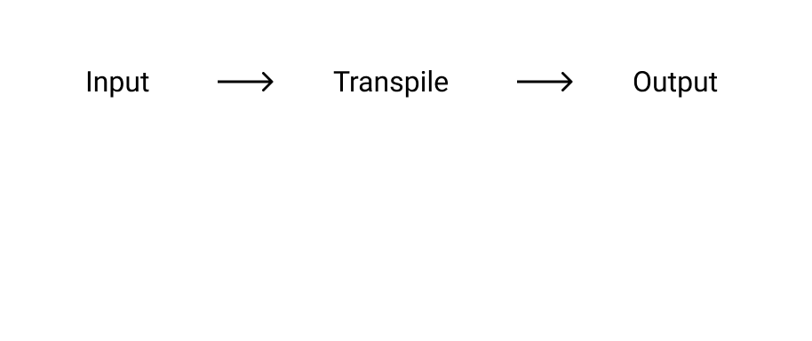

Pluginを作って理解するBabelのTranspile
@ 2019.08.27 We Are JavaScripters! @35th【初心者歓迎・LT会】
About me

おしながき
- 発表のゴール
- Babelとは
- Demo
- まとめ
- 発表のゴール
- Babelとは
- Demo
- まとめ
発表の対象者
- BabelのTranspileの仕組みを理解したい方
話すこと
- Babelの概要
- 自作Pluginで、Transpileの過程を見てみる (Demo)
話さないこと
- Babelの個々のパッケージの説明
- Babelの設定
- 発表のゴール
- Babelとは
- Demo
- まとめ
Babel is a JavaScript compiler
What is Babel? · Babel
- ES.nextなどのコードを、ES5などのコードに変換できるCompiler
- 高級言語間での変換であるため、Transpilerとも呼ばれる
図にするとこんな感じ

Transpileについて詳しく見ていく
- TransformがしやすいようにInputを解析して、AST(Abstract Syntax Tree)にする
- 主な関連パッケージ: @babel/parser
- ASTを走査して、Outputとして欲しい状態に変換する
- 主な関連パッケージ: @babel/traverse
- Plugin(e.g.
babel-plugin-transform-*)は、この処理をしている
- ASTをJSのコードとして生成する
- 主な関連パッケージ: @babel/generator
- 発表のゴール
- Babelとは
- Demo
- まとめ
- Demoのコードは、yinm/tiny-babel-plugin
- 変数名を
foo→barにTranspileする単純なPlugin - Transpileの過程をわかりやすくするために、Pluginではないversionも用意した
- 発表のゴール
- Babelとは
- Demo
- まとめ
- BabelはTranspilerである
- 変換処理では、以下の処理が行われている
- Parse
- Transform (Plugin)
- Generate
- 自作Pluginを使って、Transpileの過程を確認した